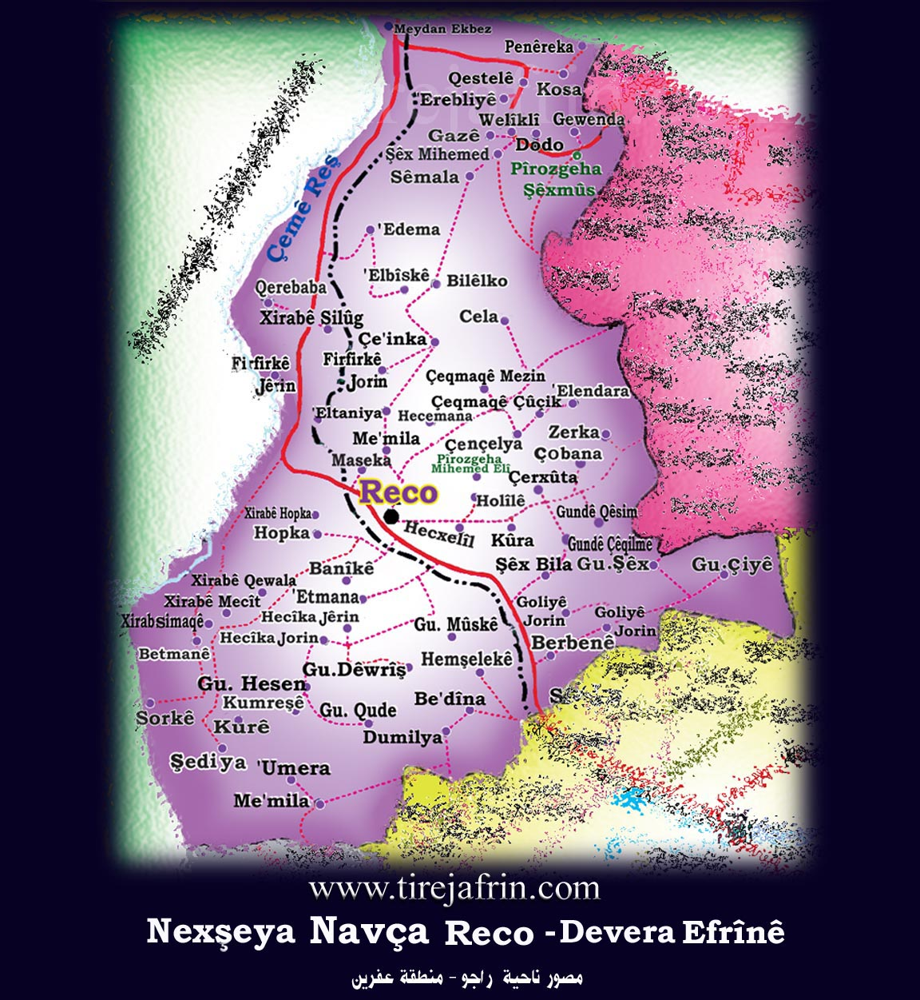
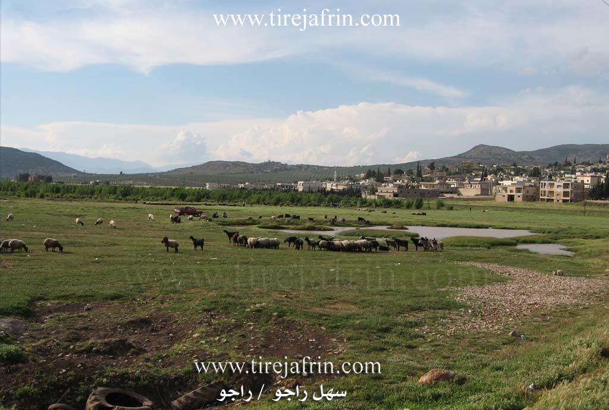
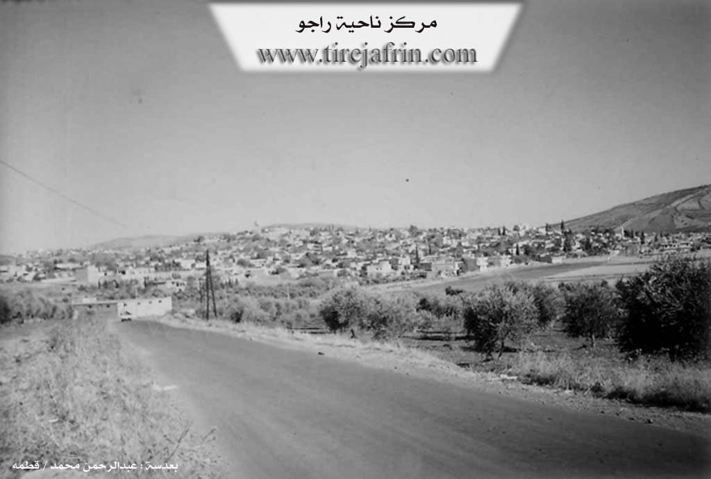

General Information
Nahiya (Subdistrict)
Reco
Also Known As
Raco, Rajo, Reco, راجو

Photos



Basic Information about Reco
Source: Tirej Afrin
Etymology: The original name is Reca, which is a Kurdish proper name sometimes derived from Receb, and the letter 'o' in Reco is the vocative particle for the masculine gender.
Foundation Date/Period: Approximately 400 years ago
Ruins: Stasyona Trenê ya Kevn
Summaries
I. Summary from TirejAfrin Site (English) of Reco
Source: https://www.tirejafrin.com/site/kura%20afrin%20%20%20Reco%20-%20Reco.htm
It is stated in the book جبل الكرد (عفرين) دراسة جغرافية Çiyayê Kurmênc (Efrîn): A Geographical Study by د. محمد عبدو علي Dr. Mihemed Ebdo Elî: The sub-district of Reco is one of the old sub-districts in the Efrîn region. Its center is the town of Reco, and it encompasses 65 administrative divisions and residential gatherings, seven of which are abandoned. The boundaries of the sub-district are: Turkey to the west and north, the sub-district of Mabeta to the southeast, and the sub-district of Şiyê to the southwest.
Reco / 4110 inhabitants - 565m /:
The original name is Reca, which is a Kurdish proper name sometimes derived from Receb, and the letter 'o' in Reco is the vocative particle for the masculine gender.
The town of Reco is located on a highland in the middle of the Balyê plain. Its residences slope gently toward the west and south. It is 25 km away from the city of Efrîn in a northwesterly direction. Most of its inhabitants work in olive cultivation; they also grow grains and some types of fruit trees in small fields. The town contains shops and workshops for machinery maintenance, smithing, and carpentry. Its weekly market, the "bazaar," is held on Saturday. The Xeta Trêna Reco-Meydan Ekbez (Reco-Meydan Ekbez railway line) passes through it, and it contains an important train station dating back to the Ottoman era. Its location is beautiful, surrounded by forested mountains from all sides. It has affiliated villages and farms.
It is stated in the book: عفرين .... نهرها وروابيها الخضراء Efrîn... Her River and Her Green Hills by the writer عبدالرحمن محمد Ebdulrehman Mihemed from the village of Qetme, Reco sub-district: It is a sub-district in Çiyayê Kurmênc, administratively following the Efrîn area of the Heleb governorate. The sub-district is located in the northern part of Çiyayê Kurmênc. It is bordered to the north by the Turkish border; to the east by the sub-districts of Bilbil and Şera; to the south by the sub-districts of Mabeta and Şiyê; and to the west by the Turkish border and the Lîwa Iskenderun (Sanjak of Alexandretta). The Reco jurisdiction includes 45 villages and twenty farms.
The Town of Reco:
It is a town and the center of a sub-district in Çiyayê Kurmênc, following the Efrîn area of the Heleb governorate. The town of Reco is situated on the summit of a limestone height with an elevation of 585 meters. The town slopes gently westward toward the Balyê plain. Its soil is red and fertile. It is 25 km away from the city of Efrîn in a northwesterly direction. It is bordered to the north by a wide plain planted with olive trees and the villages of Mamalî and Miskê; to the south by a wide, fertile plain, a high mountain chain, and several villages adjacent to the town: the village of Derwîş, Oba, Etmana, and Mûsêkê; to the east by a slope and the village of Hec Xelîl close to it at a distance of 1 km; and to the west it overlooks fertile flat land, the old archaeological train station from the Ottoman era (1911 AD), and the villages of Hopka and Banîk.
Reco is divided into two sections. The first section is very old, located on a rise on the eastern side of the town. The second section is the modern part located on the plain on the western and southern sides. The number of houses is approximately 1200, and the town is about 400 years old. Its old dwellings were made of stone and mud with wooden roofs; most have been demolished due to the spread of modern construction which has intermingled with the old buildings and expanded to all outskirts of the town.
Available services include an electricity network and a water network connected to an artesian well 1 km to the south. Residents also benefit from household cisterns that store rainwater. The town contains a town council center, a healthcare dispensary, a cultural center, a telephone center, a police station, and the sub-district directorate building (as it is the center of the sub-district). There are primary, middle, and high schools, a municipality building, a meteorological station, and a train station. There are also several commercial and service shops on both sides of the main road, and several modern olive presses.
The residents work in rain-fed agriculture, producing olives, grains, legumes, and grapes on an area of 630 hectares. They also engage in irrigated agriculture from artesian wells, growing vegetables and fruit trees on a small area of 5 hectares. Additionally, they raise sheep and goats due to the abundance of pastures on the limestone slopes. Iron ore (Hematite) has been found in the area, specifically the village of Elemdar, which is currently used in the ferro-cement industry.
The sub-district is connected to the region by an asphalt road passing through its center up to Meydan Ekbez and the Turkish border. Another road passes from the center toward the east to the sub-districts of Bilbil and Şera. The railway line passes through the western side of the town, coming from the city of Heleb, passing through the Stasyona Reco (Reco station) to the Syrian-Turkish border and the Stasyona Meydan Ekbez (Meydan Ekbez station). A market is held every Saturday, a tradition dating back to the beginning of the 1930s.
It is one of the old sub-districts in the Efrîn region, established in 1922 AD. The population of the town of Reco is 4040 people, and the total population of the Reco sub-district is 70,048 people.
Village Mukhtar: Mr. Arif Ibrahîm
Sources:
- Book: جبل الكرد (عفرين) دراسة جغرافية Çiyayê Kurmênc (Efrîn): A Geographical Study by د. محمد عبدو علي Dr. Mihemed Ebdo Elî.
- Book: عفرين .... نهرها وروابيها الخضراء Efrîn... Her River and Her Green Hills by عبدالرحمن محمد Ebdulrehman Mihemed from the village of Qetme.
Preparation and Execution:
- Manager of Tirej Efrîn site: Ebdulrehman Hacî Osman
- 20/12/2013
Possible Village Name Meaning of Reco
The original name is Reca, a Kurdish proper name sometimes derived from 'Rajab'. The 'O' is a masculine calling tool.
Source: TirejAfrin Site